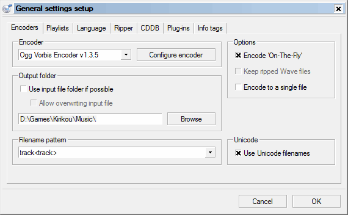
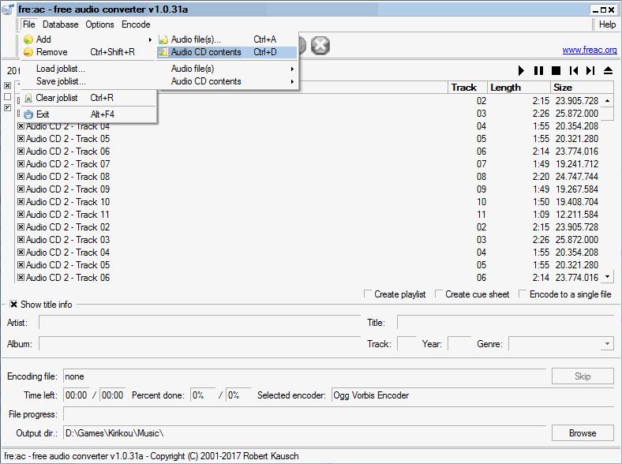
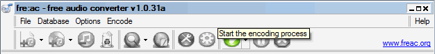
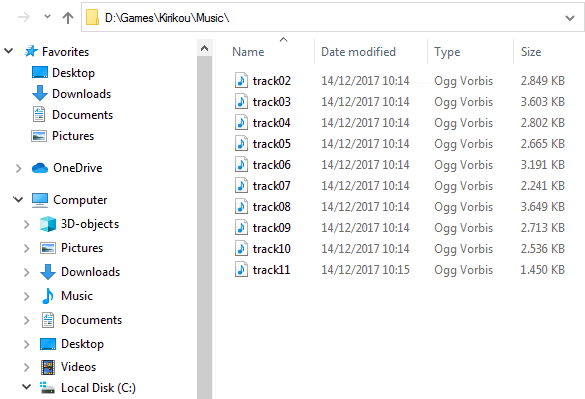
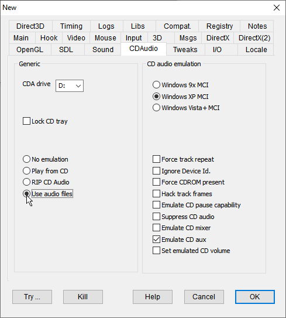

Virtual CD Audio Tutorial
Preface:
Early days of PC CD-ROM games saw a lot of available space (600 MB or a little more) for relatively small games and slow computers. It happened quite naturally that the gap between the needed and the available space went to be filled by audio tracks. In addition, early CD readers were often equipped with a direct connection to the CD, bringing the audio signal to the speakers with little or no burden for the CPU. At present, the situation has changed a lot: bigger games on DVDs or downloadable from the internet can't use audio tracks and DVD readers no longer have a direct audio connection, so playing an old game with CD-DA tracks is often impossible or causing continuous swapping of the CD reader heads. But more powerful and multi-threaded CPUs make it possible to play audio from audio files on the hard disk. Several game ports for recent platforms use this technique, usually transferring the audio tracks on .ogg files in Ogg Vorbis format and emulating the CD interface. Now it is possible to make the same with DxWnd and also in the case where you don't have a ported game but the original CD! This document explains the steps to grab the audio tracks, installing them on to the hard disk and configuring DxWnd so that it will play them.
Extracting audio tracks:
The first step is to extract the audio tracks from the CD on to the hard disk in one of the supported formats (Ogg Vorbis since v2.04.97, also .mp3, .flac and .wav formats from v2.04.98). There are plenty of tools available to extract the audio tracks, but I'm explaining one of those that I picked between the open-source ones: fre:ac (https://www.freac.org), hosted on the same SourceForge open-source service as DxWnd. It should be noted that you can extract the audio tracks both from a real (physical) CD and from a virtual CD (i.e., a .cue/.bin image mounted using a CD emulator which is able to emulate audio tracks). The operation is fairly simple: mount the CD, run fre:ac and:
1) In the "General settings setup", select the files' output folder. A wise decision to avoid moving the files later is to extract the files to the “Music” subfolder of the target game. The screenshot shows my extraction of the audio tracks for "Kirikou" (in D:\Games\Kirikou\Music). Also setting the filename pattern to "track<track>" saves a lot of boring, manual renaming of the files.
2) Select the file format: Selected encoder: Ogg Vorbis Encoder.

3) Open the CD: File > Add > Audio CD contents. Once selected, the track list should be populated with all the available tracks. Be sure that they are all selected. During the operation, fre:ac will try to compare the tracks with its internet track database to possibly identify the songs. Ignore any possible errors and skip as much as possible.

4) Press the green-colored play icon (Start the encoding process) to start the extraction. In the end you'll have the selected folder filled with the audio tracks.

Preparing DxWnd CD audio emulator environment:
DxWnd audio emulator expects up to 99 audio tracks in the "Music" subfolder of the game folder. So, copy or move the extracted files there if the extraction was done in another folder.
Then, the filename must have this structure:
tracknn.ext
where nn is a 2 digit, zero padded enumerator like 02, and .ext is the file extension telling the encoded format (either .ogg, .wav, .mp3 or .flac). Please note that the number must correspond to the actual track number so that, in a typical mixed-mode data/audio CD, "track01" is where the data track of the game is located and the music starts form "track02". Any missing track file in the sequence will automatically be considered as a data track with a duration of 4 seconds. So, the following picture shows how the folder should look like:

DxWnd offers the possibility to emulate the dynamic switch of multiple audio CDs. This may typically help running games that occupy multiple CDs with audio tracks. In order to do that, the extracted audio tracks must be placed in a separated folder following this rule: "Music" holds the first disk, "Music02" holds the second disk, "Music03" holds the third disk and so forth, up to a maximum of 9 CDs. You can use the "CD charger" panel to switch the disk content. The switch is performed at the end of a MCI command, so the playing of an audio track won't be interrupted at any instance.
First time the CD-DA content is accessed, DxWnd creates an audio track index file named "tracklen.nfo" that will cache the relevant information about each track. If you want to update the content of a "Music" folder, it is then necessary to also delete the current "traklen.nfo" so that DxWnd will create a new, updated "traklen.nfo".
Configure DxWnd:
This is the easiest part: you only need to check the “Sound > Use audio files” flag in the Expert mode configuration tabs.

CD charger:
If the program needs to access different audio CDs, you can use the "CD charger" panel to switch the CD inserted in the virtual drive. If the program configuration also includes virtualization of the CD file system, the virtual CD-DA folder will be updated accordingly.
More information is in the "CD charger" help section.
Troubleshooting:
Well, the CD-DA emulator relies on wrapping the WinMM MCI interface which is a quite big and complex interface, and CD-DA emulation is quite immature, so not all parts of it are implemented. Chances that in a new case the emulation won't work are high, but you can post your case on DxWnd SourceForge forum and I'll be happy to analyze and fix it for you. In addition, also remember to examine the game settings and enable CD audio and raise the CD audio volume, two settings that are often separated from audio effects (SFX).
Note: Some games may use a different library to interface with the CD-DA playback (for example, "MSS32.DLL"). In this case, you may need to enable "Hook > Additional modules".